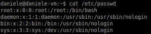
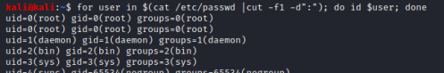
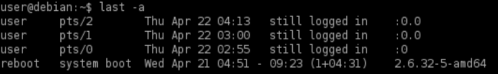
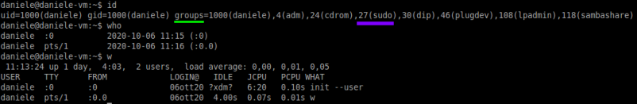
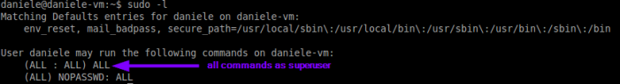
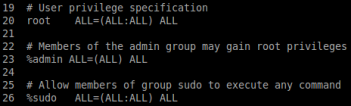

3. Users
User and Service Accounts
information such as the user ID, group ID, home directory and the path to the command shell.
An ‘x’ character means that the encrypted password is stored inthe /etc/shadow file
daniele@daniele-vm:~$ cat /etc/passwd #essential user account information

All Users (UID and GID information)
for user in $(cat /etc/passwd |cut -f1 -d":"); do id $user; done

All UID 0 Accounts (root)
cat /etc/passwd |cut -f1,3,4 -d":" |grep "0:0" |cut -f1 -d":" |awk '{print $1}'

Last logged on Users
daniele@daniele-vm:~$ last -a

Groups
daniele@daniele-vm:~$ cat /etc/group
Currently Logged on Users
daniele@daniele-vm:~$ id #current user
daniele@daniele-vm:~$ whoami #current user
daniele@daniele-vm:~$ grep $USER /etc/passwd #current user
daniele@daniele-vm:~$ who #active session
daniele@daniele-vm:~$ w #active session(more informations)
daniele@daniele-vm:~$ whoami #current user
daniele@daniele-vm:~$ grep $USER /etc/passwd #current user
daniele@daniele-vm:~$ who #active session
daniele@daniele-vm:~$ w #active session(more informations)

attention to the groups to which the privileged user belongs. One especially important group is the sudo (‘Super User Do’) group.
A user that is a member of the sudo group is able to execute commands in the context of the root user without providing the root password.
When the user is part of the sudo group you can display a list of commands that can be executed as superuser by typing:
daniele@daniele-vm:~$ sudo -l #list of commands as superuser

As expected we can run ALL commands as root because we are in the sudo group
It is possible to limit a user’s sudo privileges to certain commands by whitelisting them in the file: /etc/sudoers
cat /etc/sudoers -n
